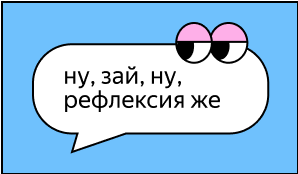

Место для рефлексии

- Три мои главные достижения за неделю — это…
- Чему я научился_ась?
- Что из того, что я хотел_а сделать, не вышло?
- Правильно ли я использовал_а своё время?
- Что вдохновляет меня в обучении?
- Какие навыки мне нужно улучшить?
- Какие эмоции я испытал_а за неделю?
- Какой у меня настрой на следующую неделю?